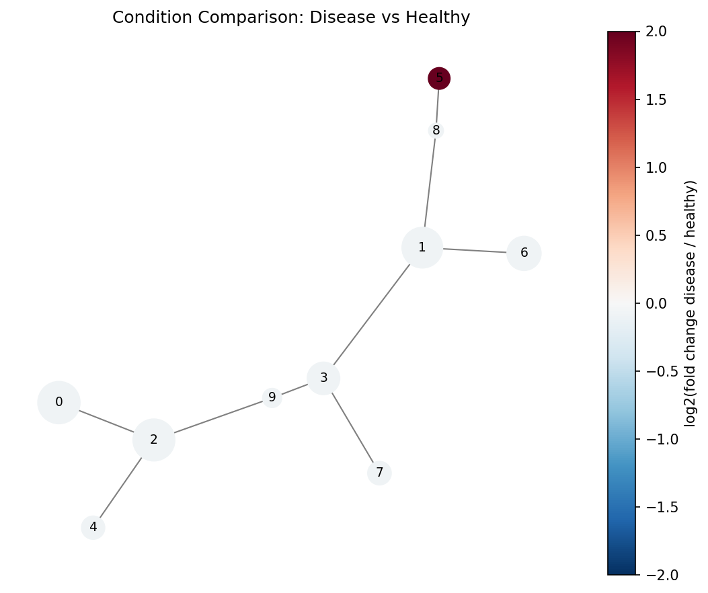

Tutorial: Comparing Conditions#
A common use case for SPADE is comparing cell populations between experimental conditions (e.g., healthy vs. disease, pre vs. post treatment).
Strategy#
Fit SPADE on the combined dataset from all conditions
Split cluster assignments by condition and compare population sizes
Visualize differences on the tree
This ensures cells from different conditions are assigned to the same clusters, making comparison meaningful.
Example: Two conditions#
import numpy as np
import pandas as pd
from densitree import SPADE
# Simulate two conditions with different rare population abundances
rng = np.random.default_rng(0)
# Shared populations
common_a = rng.normal(loc=[0, 0, 5, 3], scale=0.5, size=(2000, 4))
common_b = rng.normal(loc=[4, 4, 1, 6], scale=0.5, size=(2000, 4))
# Rare population: present in disease, nearly absent in healthy
rare_healthy = rng.normal(loc=[2, 8, 2, 2], scale=0.3, size=(20, 4))
rare_disease = rng.normal(loc=[2, 8, 2, 2], scale=0.3, size=(200, 4))
X_healthy = np.vstack([common_a, common_b, rare_healthy])
X_disease = np.vstack([common_a, common_b, rare_disease])
# Combine
X_combined = np.vstack([X_healthy, X_disease])
condition = np.array(
["healthy"] * len(X_healthy) + ["disease"] * len(X_disease)
)
print(f"Combined: {len(X_combined)} cells")
print(f" Healthy: {(condition == 'healthy').sum()}")
print(f" Disease: {(condition == 'disease').sum()}")
Fit SPADE on combined data#
spade = SPADE(
n_clusters=15,
downsample_target=0.15,
transform=None, # data is already on a reasonable scale
random_state=42,
)
spade.fit(X_combined)
Compare cluster composition#
labels = spade.labels_
# Count cells per cluster per condition
comparison = []
for cluster_id in range(15):
mask = labels == cluster_id
n_healthy = ((condition == "healthy") & mask).sum()
n_disease = ((condition == "disease") & mask).sum()
total = mask.sum()
# Fold change (disease / healthy), handling zeros
if n_healthy > 0:
fold_change = (n_disease / (condition == "disease").sum()) / \
(n_healthy / (condition == "healthy").sum())
else:
fold_change = float("inf")
comparison.append({
"cluster": cluster_id,
"healthy": n_healthy,
"disease": n_disease,
"total": total,
"fold_change": fold_change,
})
df_comp = pd.DataFrame(comparison).set_index("cluster")
print(df_comp.sort_values("fold_change", ascending=False))
Visualize on the tree#
import matplotlib.pyplot as plt
import matplotlib.cm as cm
import networkx as nx
tree = spade.result_.tree_
pos = nx.spring_layout(tree, seed=42, weight="weight")
# Color nodes by fold change
fold_changes = df_comp["fold_change"].values
# Cap infinite fold changes for visualization
fc_capped = np.clip(fold_changes, 0.1, 10)
log_fc = np.log2(fc_capped)
norm = plt.Normalize(vmin=-3, vmax=3)
colors = [cm.RdBu_r(norm(v)) for v in log_fc]
sizes = [tree.nodes[n].get("size", 1) for n in tree.nodes]
max_size = max(sizes) or 1
node_sizes = [s / max_size * 800 + 100 for s in sizes]
fig, ax = plt.subplots(figsize=(10, 8))
nx.draw_networkx(
tree, pos=pos, ax=ax,
node_size=node_sizes,
node_color=colors,
edge_color="gray",
with_labels=True,
font_size=8,
)
sm = cm.ScalarMappable(cmap=cm.RdBu_r, norm=norm)
sm.set_array([])
fig.colorbar(sm, ax=ax, label="log2(fold change disease/healthy)")
ax.set_title("SPADE Tree: Disease vs Healthy")
ax.axis("off")
fig.savefig("condition_comparison.png", dpi=150, bbox_inches="tight")
Blue nodes are enriched in healthy, red nodes in disease. The rare population cluster should appear as a bright red node.

Statistical testing (advanced)#
For rigorous comparison with biological replicates, use a per-cluster test:
from scipy.stats import fisher_exact
for cluster_id in range(15):
mask = labels == cluster_id
n_h = ((condition == "healthy") & mask).sum()
n_d = ((condition == "disease") & mask).sum()
n_h_other = (condition == "healthy").sum() - n_h
n_d_other = (condition == "disease").sum() - n_d
table = [[n_h, n_d], [n_h_other, n_d_other]]
odds_ratio, p_value = fisher_exact(table)
if p_value < 0.05:
direction = "enriched in disease" if odds_ratio < 1 else "enriched in healthy"
print(f"Cluster {cluster_id}: p={p_value:.4f}, OR={odds_ratio:.2f} ({direction})")